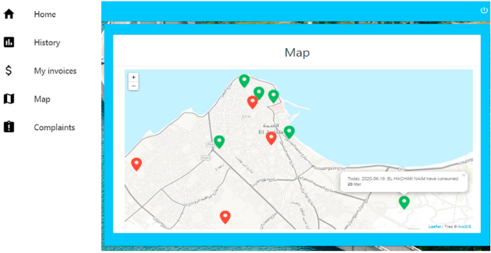

3eddad.com: A smart metring solution for a sustainble use of water
Description
3eddad.com is a smart solution for monitoring water consumption for rational and sustainable use of this under pressure resource. It's a fully AI-based system to automate water meter data collection, with multiple services for both customers and water service providers, such as consumption monitoring, detecting water leaks, visualizing water consumption, and drinking water coverage. It also provides a powerful tool to help ensure accurate decision-making with multiple reporting services.

RS components
The Recognition System can be easily installed in any water meter and it is composed of seven components:
- Female cylinder to allow flexibility.
- External Security Box.
- 180-degree angle lens to enlarge the angle and zoom out.
- Internal box and four LEDs to enable night-vision.
- RPI Camera Module v1.
- Raspberry Pi (RPI) 3 b þ model with 64 Go SD card.
- Li-ion Battery HAT, power bank management chip.
Consumption monitoring
The monitoring service allows the customer to track his consumption in real-time. The actual index and the calculated price are shown in the customer account.
Consumption curve
In addition to displaying the actual water meter index this service permits the customer to visualize the consumption curve (quantity in liters and the actual bill price) and see their changes over time. Water meter data collection can be done in two different ways:
- The recognition process happens periodically.
- The customer sends a trigger event to start the recognition process via the platform.

Consumption distribution
The water service provider will be able to identify and visualize on the map the distribution of consumption across the covered territory. Daily monitoring of consumption will provide useful insights and indicators about the consumption (averages, peak times) for better decision-making.
key strengths points
High accuracy
Autonomous energy system
Low cost
3eddad.com : A fully AI-based system to automate water meter data collection
For more information, feel free to contact us: aaroud.a@ucd.ac.ma
© 2021 Copyright:
3eddad.com